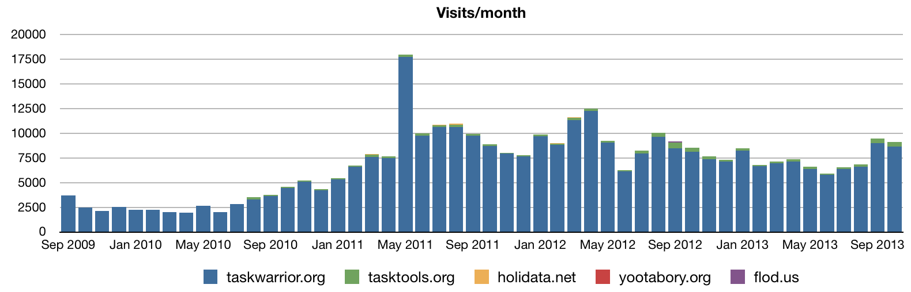
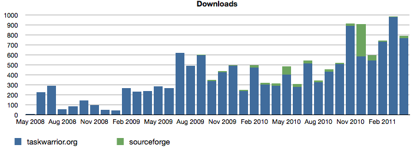
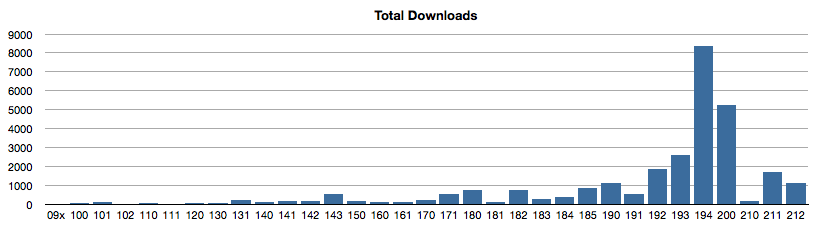
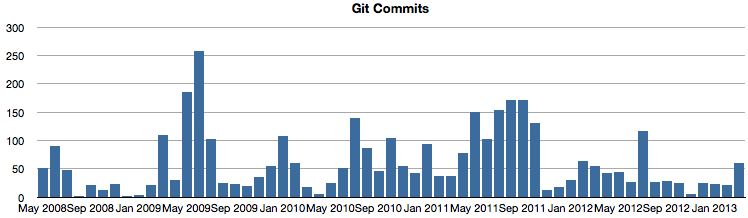
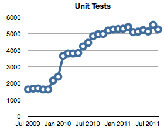
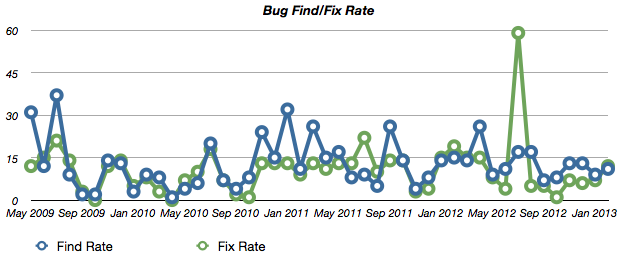
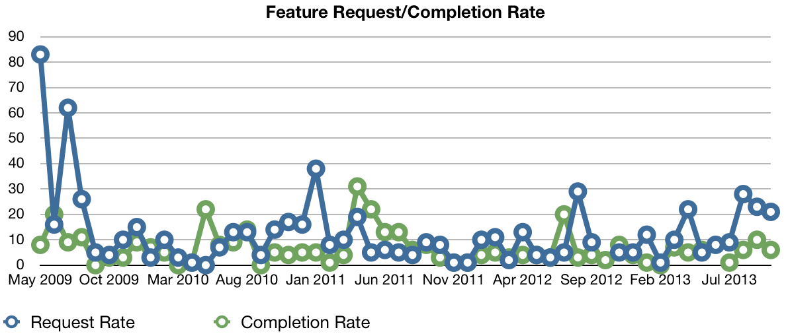
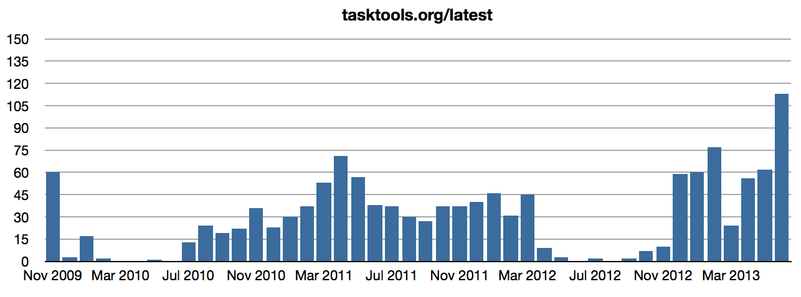
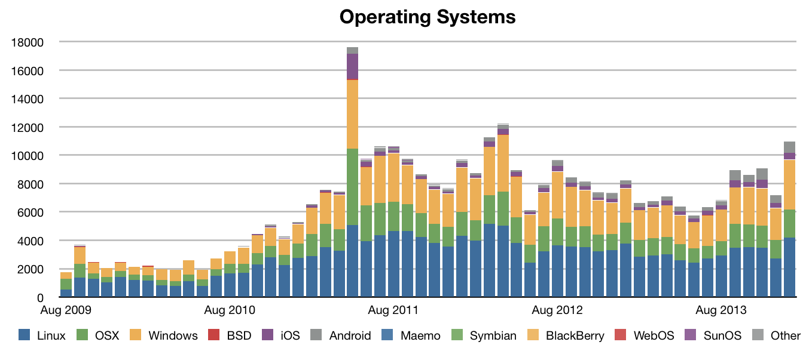
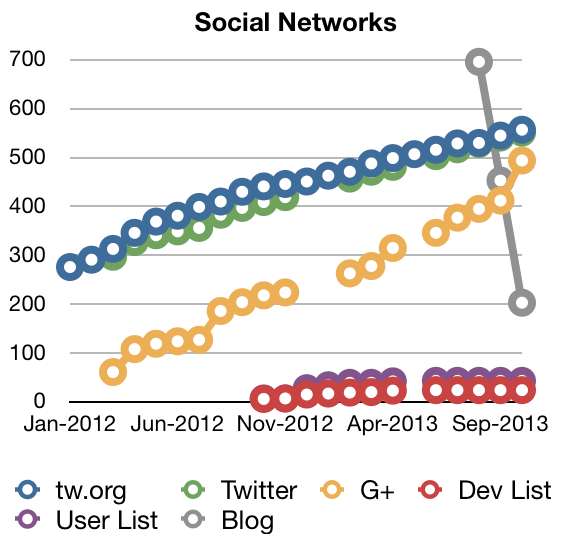

Taskwarrior Statistics
Taskwarrior Statistics
Interesting statistics from the taskwarrior web site and repository. These data form a baseline against which to measure marketing efforts. This page will be updated after the end of each month.

Visits to taskwarrior.org and assorted web sites.

Note that only downloads directly from taskwarrior.org and sourceforge.com
are recorded.

Total downloads by version.
1.9.4 was available for an entire year, which explains the spike.

Development began in 2006, but used Subversion. That history was not
brought into git. The large spike represents 1.8.0, which was essentially
a complete rewrite.

It is expected that there will ultimately be 10,000 unit tests.
The more unit tests we add, the harder it becomes to break task and not
notice. More tests should result in fewer bugs, except in the areas of
new features, which tend to be buggy at first, until the bugs are found
and the unit tests catch up.

The find rate and fix rate usually track each other well, except in the
lead up to a release, where the testing is greater.
The delay between finding and fixing a bug is represented by a horizontal
shift in the fix rate relative to the find rate.
There is always a shift toward fixing right before a release.

Feature requests are low, which is expected. The more features we put
into task, the harder it becomes to dream up new ones. At some point,
that will probably go to around zero and stay there.

The http://tasktools.org/latest url responds with the version number of
the current stable version of task. It is intended for use in auto-update
scripts.
Someone is using it, and popularity is growing despite no effort to
promote it.
Once we include the task-update.sh script in the tarball or on the site as
an add-on (which uses tasktools.org/latest), this number is expected to
rise.
There was a problem with the data, and the dip is artificial.

This is the distribution of operating systems for our site visitors.

Social membership numbers are still rising.